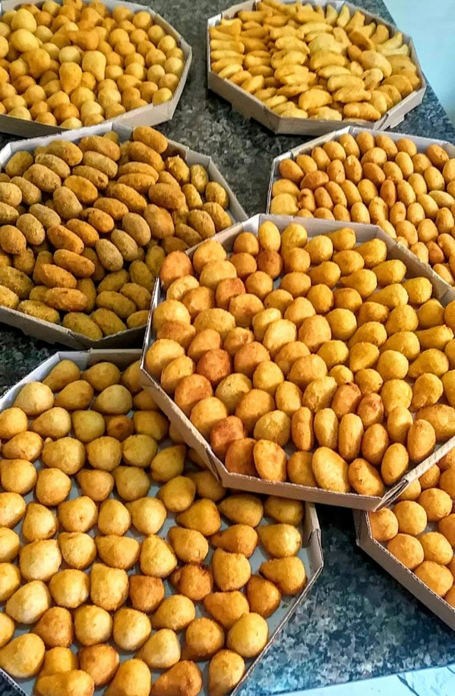
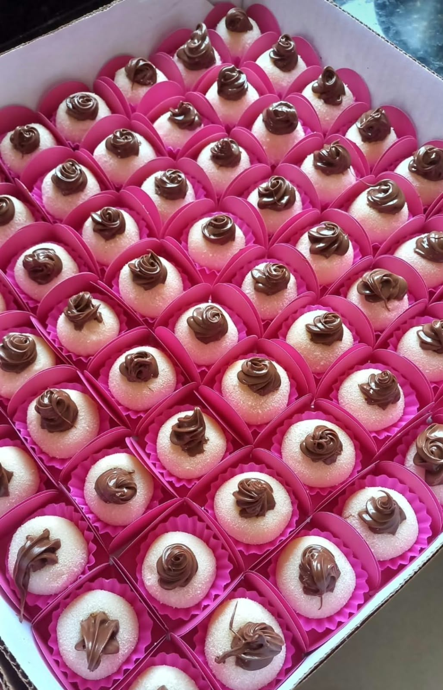
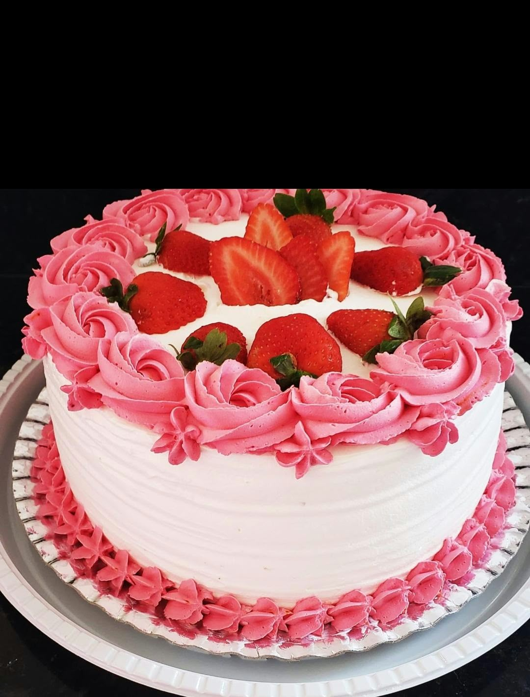
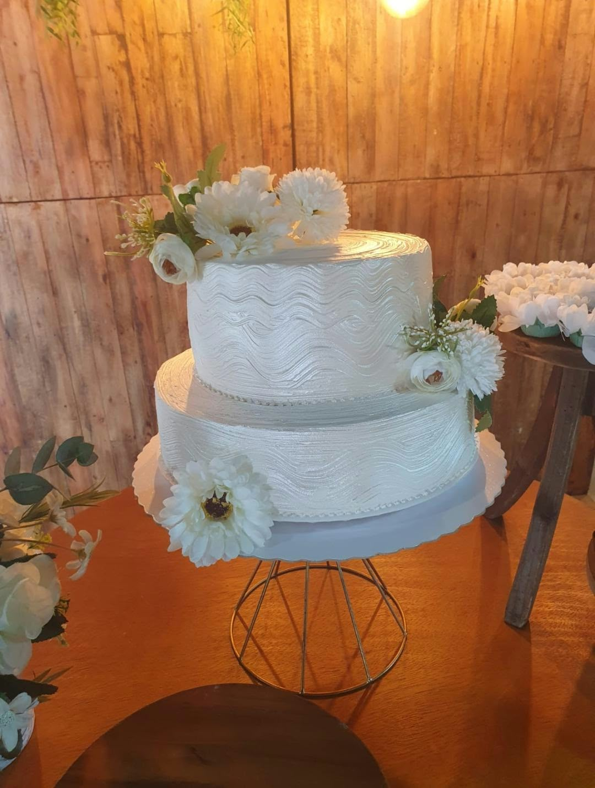

Há 10 anos adoçando momentos
Nete Doces
e Salgados.
Feitos com carinho.
Sabor que faz parte da sua história.
Salgados preparados com carinho para seus melhores momentos. Do lanche de hoje à festa de amanhã.
Siga no InstagramCelebrando10anos de sabor
Carinho no preparoEm cada detalhe
10 anos de históriaMemórias com sabor
Doces e salgadosPara todos os momentos
Encomendas para festasSua celebração especial
10anos de história.
Muitos momentos para celebrar.
Muitos momentos para celebrar.
Muito mais que uma receita
Uma história de carinho.
Um sabor de casa.
Tem sabores que viram lembranças. O salgado da tarde, o docinho da festa, a mesa cheia de gente querida. É nesses momentos que a Nete Doces e Salgados quer estar.
Neste outubro, celebramos 10 anos de história. Uma década que merece ser compartilhada com quem faz parte dela: você.
Conheça nossa lojaDifícil é escolher um só
Pequenas delícias.
Grandes momentos.
Dos favoritos de sempre aos doces da festa.
Encontre o sabor do seu próximo momento.




Fotos ilustrativas. Consulte os sabores e a disponibilidade pelo WhatsApp.
Feito de bons momentos
Nossa história
em números.
10 anosde história em outubro de 2026
Desde 2016doces e salgados na nossa história
Cada festaum novo motivo para celebrar
Você celebra. A gente capricha.
Sua festa merece
esse sabor.
Um aniversário em família ou um encontro com a turma? Converse com a Nete para escolher os doces e salgados que combinam com a sua comemoração.
AniversáriosEmpresasEscolasIgrejasFestas em geral
Planeje sua encomenda Um mês muito especial
10 anos. E a festa é nossa!
Acompanhe as novidades de aniversário e consulte os combos disponíveis.
Um pedacinho do nosso dia
Tem mais sabor
no nosso Instagram.
Novidades, produtos e momentos da Nete.
Acompanhe o perfil @netedocesesalgadosgja.


Galeria ilustrativa de produtos. Veja as publicações da loja no Instagram.
Você também faz parte dessa história.
Já provou nossas delícias? Conte para a Nete como foi sua experiência.
Vamos conversar?
O próximo bom momento
começa aqui.
WhatsApp e telefone(13) 98816-4257Ligar para a Nete
Onde estamos
Rua Araguaia, Sítio Pae Cará — VC
Horário de abertura
A partir das 9h30
Consulte os dias e o horário de fechamento pelo WhatsApp.
Nosso Instagram@netedocesesalgadosgja
Ver região no Google Maps
Confirme o número e a localização exata com a loja antes da visita.